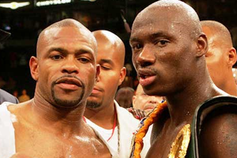

Рой Джонс-младший. Представляю вам большую подробную биографию знаменитого боксёра, серебряного медалиста Олимпийских игр и чемпиона мира в четырёх весовых категориях среди профессионалов. Настоящая история Роя Джонса.
Вступление
В каждой стране есть свои кумиры. Идолом русскоязычных любителей бокса стал любимчик Владимира Ильича Гендлина, человека который создал передачу "Большой ринг". Гендлин является первопроходцем на российском телевидении в сфере профессионального бокса. Любая форма фанатизма отдаляет от реальности. Идеализация конкретной личности влечёт за собой искажение действительности. Сегодня мы совершим путешествие в историю бокса и познакомимся с реальной биографией Роя Джонса-младшего, самого популярного бойца на территории стран бывшего СНГ. В рассказе о кудеснике ринга не будет восхищения и пафоса. Эти моменты отдаляют от реальной картины. Горькая правда ценнее нежели сладкая ложь скрытая за красивыми видео-нарезками технических действий Роя Джонса.
Детство и юность
Рой Джонс-младший родился 16 января 1969 года в Пенсаколе (штат Флорида, США). Рой Джонс-старший, отец будущего чемпиона мира и ветеран Вьетнамской войны, выступал на профессиональном ринге. Мужчина трудился на должностях электрика и полицейского. Джонс-старший завершил спортивную карьеру из-за проблем со здоровьем. В 1976 году он уступил Марвину Хаглеру и на протяжении многих лет был основным спарринг-партнёром Томаса Хирнса. Рой построил спортзал в Пенсаколе. 5-летний Джонс-младший стал первым учеником своего отца.
Джонсу-старшему не удалось реализовать свой потенциал на профессиональном ринге. Но он знал каким образом его сын может заработать деньги. Занятия боксом и поддержка отца позволили Джонсу-младшему закрыть вопрос обеспечения своих первичных потребностей. У маленького Роя не было выбора. С раннего детства он постигал азы кулачного искусства. Результаты не заставили ждать. Его отец был строг в плане дисциплины. Однако обвинения в адрес Джонса-старшего в его чрезмерно жестоком воспитании не имеют под собой оснований. За счёт его требовательного подхода Рой-младший стал одним из лидеров сборной США.
Любительская карьера
Джонс добился больших высот на любительском ринге. Он стал призёром нескольких крупных турниров:
- золотая медаль на юношеских Олимпийских играх (1984 год
- дважды выиграл национальный турнир "Золотые перчатки" в двух весовых категориях (1986 и 1987 год)
- серебряный призёр Игр доброй воли (1986 год)
В 1988 году Рой уступил Джеральду Макклеллану в рамках 1/2 финала национального турнира "Золотые перчатки". Два месяца спустя он прошёл отбор на главный старт четырёхлетия.
Венцом любительской карьеры Джонса стали Олимпийские игры в Сеуле (1988 год). На предварительной стадии соревнований Рой победил боксёров из Малави, Чехословакии, СССР и Великобритании. В финале ему противостоял Пак Си Хун, спортсмен из Кореи. Рой доминировал. По ходу боя он отправил соперника в нокдаун. По статистике Джонс нанёс 86 точных ударов, тогда как кореец только 32. Сомнений в победе американца не было ни у кого кроме судейской коллегии. Трое из пяти судей отдали свои голоса в пользу Си Хуна. После боя Пак, с помощью переводчика, встретился с Роем в коридоре олимпийского центра и признал своё поражение. Джонсу был присвоен кубок Вэла Баркера, как самому техничному боксёру турнира. Он стал обладателем серебряной медали главного старта четырёхлетия в категории до 71 килограмма.
Оба спортсмена оказались жертвами судейского беспредела. Корейский боксёр переживал из-за случившегося. Судейские махинации и давление общественности привели к завершению его карьеры. Пак Си Хун воспитывался в строгих традициях, где главным посылом является уважение к сопернику и скромность. Он не был виновен в решении судей. Вопиющий случай стал причиной к созданию новой системы определения победителя.
После выступления на Олимпиаде Джонс вернулся в Пенсаколу. Рой принял решение не подписывать долгосрочный контракт с крупными промоутерскими компаниями. Ошибка отца и сына привела к организационным проблемам в начале профессионального пути. 6 мая 1989 года Джонс дебютировал в "профи". Его рекорд в аматорах: 121 победа и 13 поражений (2 досрочных).
Профессиональный бокс
Джонс-старший не имел большого опыта в сфере работы менеджером. Он учился по ходу дела. На протяжении 4 лет его сын продвигался к вершинам рейтингов среднего дивизиона. В 1993 году Джонс-младший уволил отца с должности своего менеджера. Как утверждает сам боксёр отец убил его любимого пса, что и привело к разрыву их отношений. Место главного тренера Джонса занял Элтон Меркерсон.
Джеймс Тони, обладатель титула по версии IBF в среднем дивизионе, принял решение оставить пояс и поднялся во втором средний вес. Вакантный титул разыграли между собой первый и второй номера рейтинга Международной боксёрской федерации: Бернард Хопкинс и Рой Джонс.
22 мая 1993 года Рой победил Бернарда единогласным судейским решением и стал новым чемпионом мира по версии IBF. Он провёл защиту против Томаса Тейта и принял решение перейти во второй средний дивизион. 17 лет спустя Хопкинс и Джонс вновь "скрестили перчатки" в квадрате ринге. Палачу удалось взять реванш у принципиального соперника.
18 ноября 1994 года Джонс одержал главную победу в своей карьере. Он одолел Джеймса Тони, действующего чемпиона мира по версии IBF во втором среднем дивизионе.
Рой 5 раз защитил титул по версии IBF. При этом Джонс не проводил бои против обязательных претендентов:
- Антуан Бёрд
- Винни Пациенца
- Тони Торнтон
- Эрик Лукас
- Брайант Брэннон
В 1995 году планировался объединительный бой-реванш между Джонсом и Джеральдом Макклелланом. Для свершения целей Джеральду требовалось победить Найджела Бенна, действующего обладателя титула по версии WBC. 22 мая 1995 года Бенн нокаутировал Макклеллана в 10 раунде. После боя Джеральд частично лишился зрения и слуха. Экс-соперник Джонса оказался прикован к инвалидной коляске. Долгожданный реванш не состоялся. Менеджеры Роя не желали идти на переговоры с Найджелом Бенном. Проигнорировали они и персону Криса Юбенка-старшего, чемпиона мира по версии WBO, а также отказались от предложения представителей Стива Коллинза. Джонс вынужден был оставить титул по версии IBF вакантным из-за нежелания проводить обязательную защиту против Чарльза Брюэра. Экс чемпион принял решение перейти в полутяжёлый дивизион. Команда Роя избегала коллабораций с другими чемпионами несмотря на отсутствие препятствий в переговорном процессе.
22 ноября 1996 года Джонс победил 40-летнего Майка Маккаллума и стал обладателем вакантного титула по версии WBC в полутяжёлом дивизионе.
Титул по версии WBC стал вакантным после того как Фабрис Тиоззо, его прежний обладатель, перешёл в первый тяжёлый вес.
21 марта 1997 года Рой уступил Монтеллу Гриффину ввиду дисквалификации в 9 раунде. Чемпион нанёс удар по сопернику стоящему на колене. Джонс нокаутировал Гриффина в 1 раунде незамедлительного реванша.
Рой одержал важную победу над Вирджилом Хиллом и объединил титулы в бою с Лу Дель Валле, обладателем пояса по версии WBA. В 8 раунде Джонс впервые в своей карьере оказался в нокдауне. Он поднялся и выиграл бой единогласным судейским решением. Чемпион добавил в свою коллекцию титул по версии IBF благодаря победе над Реджи Джонсоном. После 7 последовательных защит трёх главных поясов полутяжёлого дивизиона Рой принял решение покорить королевский вес. Его команда отклонила предложение представителей Дариуша Михальчевски, обладателя титула по версии WBO и линейного чемпиона мира в полутяжёлом дивизионе.
1 марта 2003 года Рой победил Джона Руиса, действующего чемпиона мира по версии WBA в тяжёлом весе, и стал новым обладателем титула. Джонс был лишён звания из-за отказа в проведении обязательной защиты против Виталия Кличко. Он вернулся в полутяжёлый дивизион.
За время отсутствия Джонса вакантные титулы по версиям WBC и IBF перешли в руки Антонио Тарвера. 8 ноября 2003 года Джонс победил Тарвера решением большинства судейских записок. Вердикт судей вызвало большой резонанс в боксёрской общественности. Представители Всемирного боксёрского совета назначили незамедлительный реванш.
15 мая 2004 года Антонио нокаутировал Роя во 2 раунде.
Вслед за сокрушительным поражением и потерей чемпионских титулов Джонс был нокаутирован Гленом Джонсоном, обладателем пояса по версии IBF. Второе досрочное поражение послужило началом конца эры Роя Джонса. Он уступил Тарверу в их третьем бою. Три фиаско подряд привели к паузе в выступлениях. Экс-чемпион сосредоточился на работе комментатором. В 2006 году, после 11 месяцев пребывания в новой должности, Джонс был уволен с поста тележурналиста в связи низкими рейтингами.
Рой вернулся с тремя победами. Особняком стояла его успех в бою с Феликсом Тринидадом. 8 ноября 2008 года Джо Кальзаге победил Джонса единогласным судейским решением. После разгромного поражения в бою с Итальянским драконом Рой уже никогда не возвращался на чемпионский уровень. Он повторил ошибку многих "коллег по цеху" чрезмерно задержавшихся на ринге после наступления спада физических кондиций.
Джонс проводил бои до 2018 года и завершил выступления с рекордом: 66 побед, 49 нокаутом и 9 поражений.
Жизнь после бокса
Параллельно с выступлениями на ринге Джонс развивался в медийном направлении. Он записал несколько музыкальных альбомов в сфере рэп. Экс-чемпион сыграл несколько эпизодических ролей в кинокартинах. В 2012 году Рой оказался в тяжёлом финансовом положении из-за проблем с налогами. В 2018 году Джонс-старший вынужден был продать большой участок земли дабы покрыть налоговые расходы своего сына. Джонс-младший не поддерживает контакт со своими родителями. Рой состоит в официальном браке с Нэтлин Джонс.
19 августа 2015 года Рой встретился с Владимиром Путиным, президентом РФ, на территории Крыма (Севастополь). Экс-чемпион сделал запрос на получение российского гражданства. 12 сентября 2015 года В.В. Путин одобрил просьбу Джонса. Тем самым боксёр поддержал Российскую Федерацию в её преступных действиях по аннексии Крыма. По этой причине ему был запрещён въезд на территорию Украины, где российские войска ведут военные действия против мирных жителей и нарушают европейские законы убивая граждан другой страны.
Джонс проживает на территории России где развивает несколько направлений бизнеса за счёт финансирования из государственных дотаций. Истинная цель получения российского гражданства: уход от налогов. Российское правительство финансирует проекты экс-чемпиона используя деньги налогоплательщиков. Налоговые долги Роя Джонса-младшего легли на "плечи" его родителей.